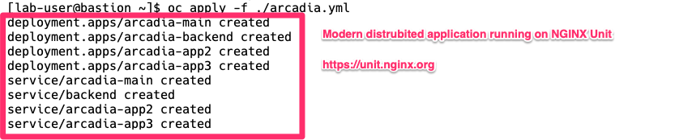
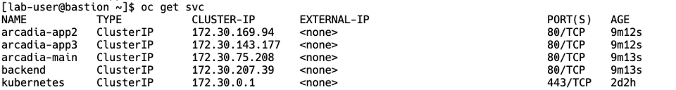

F5 NGINX and Red Hat OpenShift Demo > Class 1: RHPDS Lab - NGINX Kubernetes Ingress Controller For OpenShift > NGINX Kubernetes Ingress Controller For OpenShift Source | Edit on
3. Arcadia Application | Deployment¶
For this workshop, we are going to use the Arcadia Financial application. The application is built with four different microservices that are deployed in the Kubernetes environment.
- Main - provides access to the web GUI of the application for use by browsers
- Backend - is a supporting microservice and provides support for the customer-facing services only
- App2 - provides money transfer API based functionalities for both the Web app and third party consumer applications
- App3 - provides referral API based functionalities for both the Web app and third party consumer applications
All of our pods are created based on the NGINX Unit application server.
NGINX Unit is a dynamic application server capable of running beside NGINX Plus and NGINX Open Source or standalone. NGINX Unit supports a RESTful JSON API, deploys configuration changes without service disruptions, and runs apps built with multiple languages and frameworks. Designed from scratch around distributed applications needs, it lays the foundation for service mesh.
{kind=link}
Deploy the Arcadia Application into Kubernetes
The Arcadia Application deployment is a single manifest file containing the resources need to build.
- Kubernetes deployment for the four docker containers
- Kubernetes services for the four docker containers
Get the yaml file. In the terminal window, copy the below text and paste+enter:
wget https://raw.githubusercontent.com/f5devcentral/f5-digital-customer-engagement-center/main/solutions/delivery/application_delivery_controller/nginx/kic/templates/arcadia.yml
For this lab, we saved the container images to quay.io, a Red Hat hosted container image registry. We would need to modify the yaml file to use the quay.io registry:
- quay.io/repository/redhat-gpst/rhpds-nginxplus-arcadia-main
- quay.io/repository/redhat-gpst/rhpds-nginxplus-arcadia-backend
- quay.io/repository/redhat-gpst/rhpds-nginxplus-arcadia-app2
- quay.io/repository/redhat-gpst/rhpds-nginxplus-arcadia-app3
Alternativelly, you can copy the below text and paste+enter:
sed -i -e "s/tonymarfil\/arcadia-main:unit/quay.io\/redhat-gpst\/rhpds-nginxplus-arcadia-main/" arcadia.yml sed -i -e "s/tonymarfil\/arcadia-backend:unit/quay.io\/redhat-gpst\/rhpds-nginxplus-arcadia-backend/" arcadia.yml sed -i -e "s/tonymarfil\/arcadia-app2:unit/quay.io\/redhat-gpst\/rhpds-nginxplus-arcadia-app2/" arcadia.yml sed -i -e "s/tonymarfil\/arcadia-app3:unit/quay.io\/redhat-gpst\/rhpds-nginxplus-arcadia-app3/" arcadia.yml
Apply the updated yaml file. In the terminal window, copy the below text and paste+enter:
oc apply -f ./arcadia.yml
Example:

Arcadia application Kubernetes objects
In the terminal window, copy the below text and paste+enter:
oc get services
Example:

Arcadia application has been deployed and started
Proceed to NGINX Ingress Controller | Examples